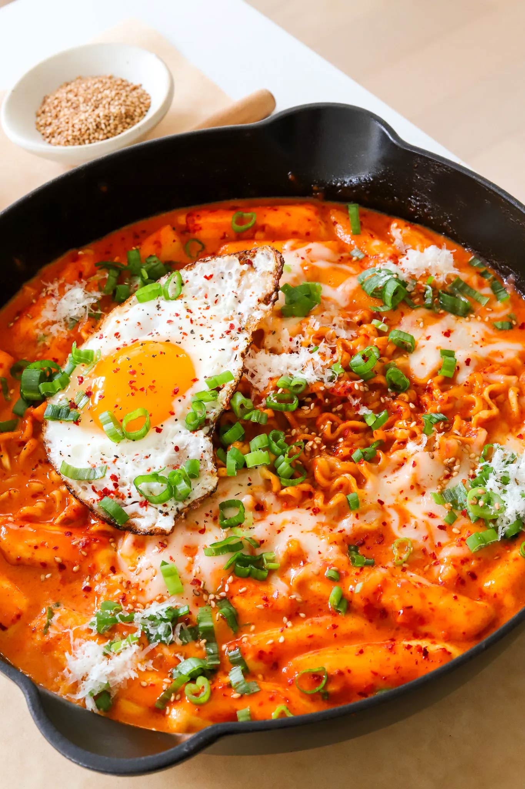

Dinner | Main Course
Robokki- Korean Rice Cakes and Ramen
Craving something that’s both spicy and comforting? You have to
make Rabokki —this Korean dish combines chewy rice cakes and ramen
with a rich, creamy, spicy sauce that’s just perfect for those
cozy nights in. Top it off with some ooey gooey mozzarella and a
fried egg, and you’ve got a meal that is THE definition of comfort!
PREP TIME: 20 MINUTES
COOK TIME: 25 MINUTES
TOTAL TIME: 45 MINUTES
YIELDS: 2
INGREDIENTS
RICE CAKES
- 2 cups of sweet rice flour
- 1 cup of hot water
- 1/2 teaspoon salt
-
1/2 tablespoon sesame oil oil, for coating
rice cakes
SAUCE
- 1 tablespoon unsalted butter
- 1 tablespoon minced garlic
- 2 cups hot water
- 1/4 cup gochujang paste
-
1/2 tablespoon gochugaru, add more or less
depending on spice tolerance
- 2 to 3 tablespoons white sugar
- 1/4 cup grated parmesan
- 1/4 cup heavy cream
- pinch of salt, to taste
OTHER
- 5-ounce package ramen
- 1/3 cup mozzarella cheese
- 1 fried egg
- chopped green onions, optional garnish
- toasted sesame seeds, optional garnish
INSTRUCTIONS
MAKING THE RICE CAKES
-
Start by mixing sweet rice flour and salt in a
large bowl. Gradually add hot water, stirring with
a wooden spoon or spatula until the mixture comes together
into a dough. The dough should be slightly sticky but firm
enough to hold its shape.
-
Transfer the dough to a clean surface and knead it for
about 5 minutes until smooth and elastic. If the dough
is too sticky, dust your hands with a bit of rice flour
as you knead.
-
Divide the dough into small portions and roll each one
into a long, thin cylinder, about the thickness of your
thumb. You can cut the cylinders into smaller, bite-sized
pieces now.
-
To prevent sticking, lightly coat the rice cakes with
sesame oil. This also helps to keep them tender during cooking.
-
Bring a large pot of water to a boil. Add the rice
cakes and cook them for about 8 to 10 minutes, or until
they float to the surface and become chewy.
-
Drain the rice cakes and rinse them under cold water to stop
the cooking process. Set them aside while you
prepare the sauce.
MAKING THE SAUCE
-
In a large pan or skillet, melt the unsalted butter over
medium heat. Add the minced garlic and sauté until it
becomes fragrant and lightly golden.
-
Pour in the hot water, gochujang paste, and gochugaru.
Stir everything together until the gochujang is fully
dissolved, and the sauce starts to simmer.
-
Add the white sugar to balance out the heat from the
gochujang and gochugaru. Stir until the sugar
dissolves completely.
-
Next, stir in the grated parmesan and heavy cream.
-
Taste the sauce and add a pinch of salt if needed. Let
the sauce simmer for a few minutes until it thickens slightly.
ASSEMBLING THE RABOKKI
-
While the sauce simmers, add the ramen noodles and rice cakes.
-
Let them simmer for about 5 minutes to absorb the
flavors and fully cook.
-
Once cooked, sprinkle the mozzarella cheese over the
top of the rabokki. Reduce the heat to low and cover the
pan, allowing the cheese to melt and become gooey.
-
Top the dish with a fried egg. Garnish the rabokki with
chopped green onions and sesame seeds.
-
Serve immediately while it’s hot!
Source Recipe:
https://moribyan.com/rabokki-korean-rice-cakes-and-ramen/